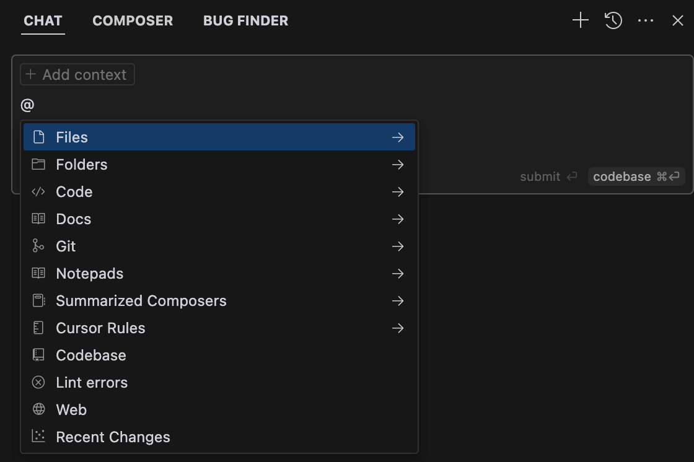

Cursor @ Symbol
In Cursor,@The symbol is a powerful tool for quickly accessing and referencing various contextual information, helping users interact with AI more efficiently.
In any AI interaction scenario (such as⌘KEnter it in the command palette, chat window, or terminal)@, it will trigger a context-related menu, automatically filtering and recommending the most relevant resources in the current project (such as files, code snippets, documents, etc.).

Keyboard operations: Use↑/↓Use arrow keys to navigate, Enter to confirm selection. If the selected item is a category (e.g.,@Files), the list will further filter the specific resources under that category.
File reading strategy: for file references, you canCtrl/⌘ Mswitch between "full read" and "summary read" modes (e.g., full-text reference or only key parts).
@ Symbol
@The symbol supports the following main commands:
| Features | Description | Use Case |
|---|---|---|
| @Files | Reference the entire file as context. Supports file path preview and chunked processing. | When you need to reference specific file content, such as code files, documents, etc. |
| @Folders | Reference an entire folder as context. | Used when a large number of files need to be provided as context, such as a project directory. |
| @Code | Reference a specific code snippet as context. | When you need to query or operate on specific code snippets. |
| @Codebase | Search important files or code blocks in the codebase and reorder them by relevance. | Used when you need to find relevant code or files across the entire codebase. |
| @Git | Scan Git commits, diffs, or pull requests to help find issues. | Used when you need to analyze Git-related information, such as commit history, code diffs, etc. |
| @Web | Search web information as additional context. | Used when you need to obtain the latest web information or external resources. |
| @Docs | Reference preset third-party documentation or custom documentation. Supports adding custom documentation. | When you need to reference external documents or a custom knowledge base. |
| @Definitions | Reference all nearby definitions as context. | When you need to reference definitions such as variables and functions in the current code. |
| @Chat | Add the current chat message as context. | When you need to reference previous conversation content in chat. |
Advanced usage tips
Combined Commands:Input@Files src/utils/helper.js @Codebase, you can reference the specified file and associate the global context of the codebase to generate highly customized code.
Dynamic resource integration:Paste to@For links at the beginning (e.g., @https://api.example.com/docs), Cursor will automatically parse the content and include it in the context.
privacy and configuration management:Through.cursorignoreA file (such as .gitignore) excludes sensitive files or directories from indexing. Add custom documentation links in Settings > Features > Docs to enhance@DocsCoverage scope.
Typical use case examples
1. Code Generation
- Instruction: Generate user login functionality@Files src/models/user.js @Docs https://jwt.io/introduction
- Result: Generate secure authentication logic based on the existing user model and official JWT documentation.
2. Error Troubleshooting
- Command: Explain the cause of this error@Code 12-25line@Git HEAD~1
- Result: Analyze potential issues by combining the code snippet and recent commit history.
3. Cross-File Refactoring
- Command: Convert class components to functional components@Folders src/components @Codebase
- Result: Batch convert and ensure compatibility with global styles and state management.